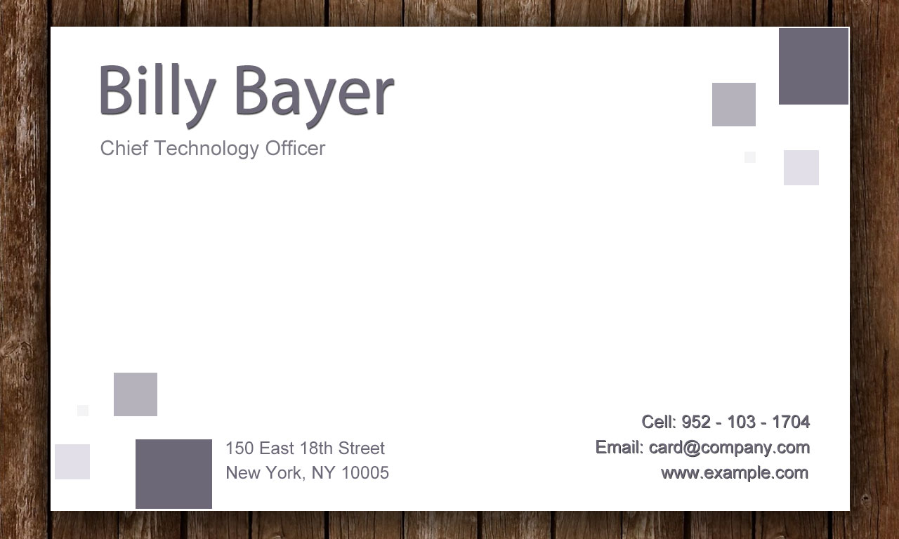

FrameZoomer lets to zoom up certain portions of an image. It doesn't need any dependencies and it will be especially usefull if you need to zoom in and highlight some recognized or pre-defined parts of an image with animation.
Latest version: 0.1.0
